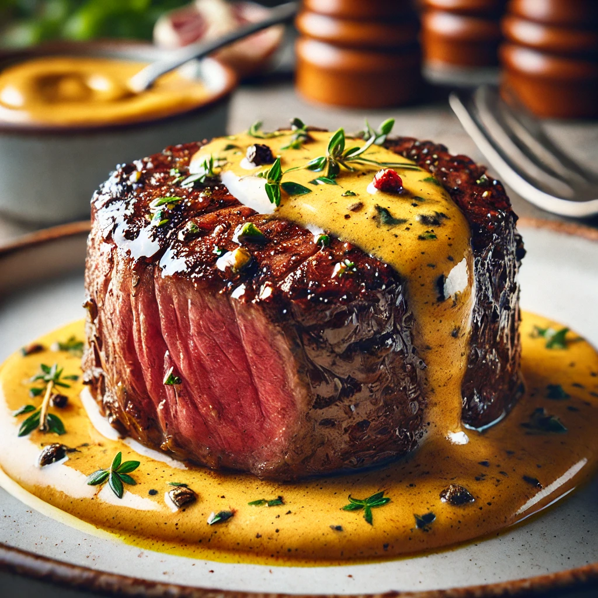
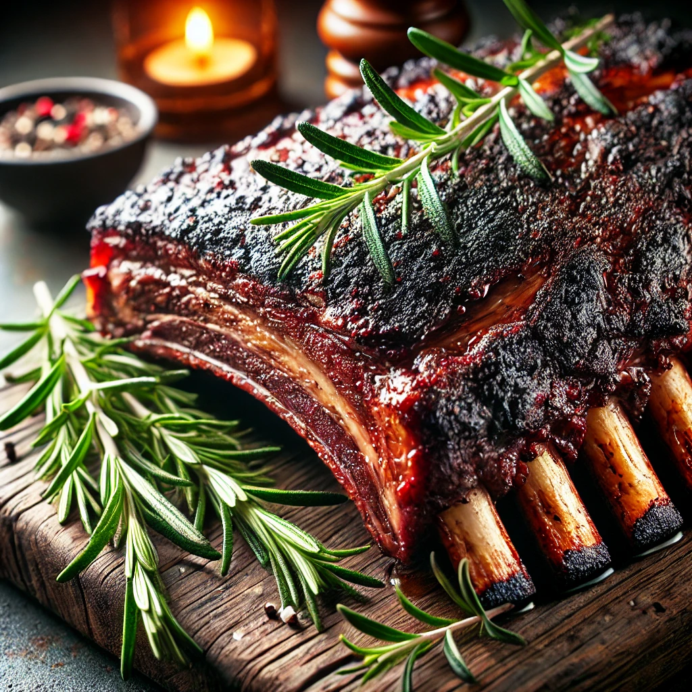

Filé Mignon ao Molho de Mostarda
Ingredientes:
- 4 medalhões de filé mignon
- 2 colheres de sopa de manteiga
- 1/2 xícara de creme de leite
- 2 colheres de sopa de mostarda
- Sal e pimenta a gosto
Modo de Preparo:
1. Tempere os medalhões com sal e pimenta.
2. Grelhe-os na manteiga até o ponto desejado e reserve.
3. Na mesma panela, adicione o creme de leite e a mostarda, mexendo até formar um molho.
4. Sirva o filé mignon com o molho por cima.
Costela Assada
Ingredientes:
- 1 peça de costela bovina
- Sal e pimenta a gosto
- Ramos de alecrim
Modo de Preparo:
1. Tempere a costela com sal, pimenta e alecrim.
2. Asse coberta com papel alumínio por 4 horas a 150°C.
3. Retire o alumínio e asse por mais 30 minutos.
Churrasco

Ingredientes:
- 1 peça de picanha
- Sal grosso a gosto
Modo de Preparo:
1. Corte a picanha e tempere com sal grosso.
2. Grelhe até o ponto desejado.